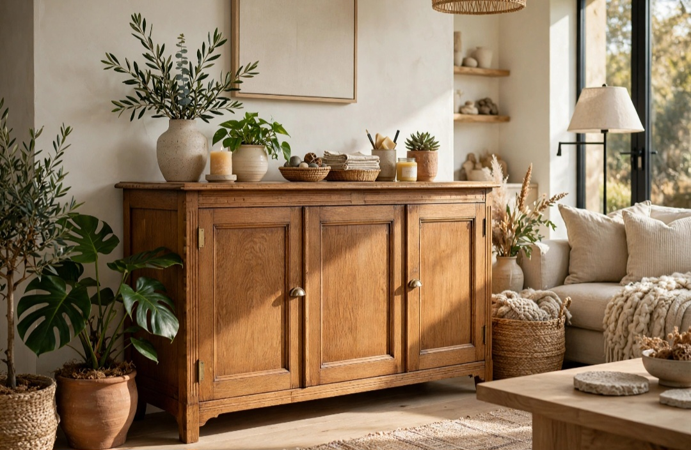

En este artículo
Introducción
Guía práctica sobre cómo elegir cortinas para casa según luz, privacidad y estilo con criterios de proporción, funcionalidad, mantenimiento y decoración para tomar decisiones más acertadas en casa.
Tomar una buena decisión empieza por observar el espacio real, sus medidas, la luz disponible y la forma en que se utiliza cada día. Esta guía desarrolla los criterios principales para elegir con más seguridad y evitar cambios innecesarios.
Define primero luz y privacidad
Antes del color o estampado, define cuánto quieres filtrar la luz y cuánta privacidad necesitas. Un dormitorio puede requerir oscurecimiento, mientras un salón admite tejidos más ligeros.
Antes de comprar o modificar nada, mide y observa el espacio durante varios momentos del día. La luz natural, los recorridos y los hábitos cotidianos ofrecen información que una fotografía no muestra. Anota las necesidades principales y ordénalas por importancia.
Trabajar por etapas reduce errores. Resuelve primero función y seguridad; después color, textura y detalles. Una vez realizado un cambio importante, úsalo durante varios días antes de añadir otra cosa. Así resulta más fácil identificar qué mejora realmente el ambiente.
Una decisión acertada debe relacionarse con el resto del ambiente. Observa materiales, colores, dimensiones y elementos que permanecerán. No hace falta que todo coincida exactamente: repetir uno o dos rasgos crea una relación suficiente y evita un resultado rígido.
Prueba siempre que sea posible antes de comprometerte. Muestras, plantillas de papel, cinta en el suelo o una configuración temporal permiten comprobar proporciones y comodidad. Esta fase de prueba suele evitar devoluciones y trabajos innecesarios.
Finalmente, piensa en cómo cambiará la solución con el tiempo. La luz, las estaciones, el desgaste y las necesidades de la familia pueden modificar la forma de utilizar el espacio. Elegir con cierto margen de adaptación hace que el resultado dure más.
Toma correctamente las medidas
Mide ancho y alto de la ventana, pero también el espacio disponible alrededor. La barra suele funcionar mejor cuando supera el marco y permite retirar el tejido de la entrada de luz.
El presupuesto también forma parte del proyecto. Establece una cantidad máxima y prioriza elementos que se utilizan a diario. Varias compras pequeñas realizadas por impulso pueden costar más que una solución duradera y adecuada.
Reutilizar lo existente es una herramienta válida. Cambiar una pieza de lugar, limpiar, reparar o combinarla de otra manera puede transformar el resultado sin aumentar la cantidad de objetos. La decoración más coherente no siempre es la que incorpora más novedades.
Una decisión acertada debe relacionarse con el resto del ambiente. Observa materiales, colores, dimensiones y elementos que permanecerán. No hace falta que todo coincida exactamente: repetir uno o dos rasgos crea una relación suficiente y evita un resultado rígido.
Prueba siempre que sea posible antes de comprometerte. Muestras, plantillas de papel, cinta en el suelo o una configuración temporal permiten comprobar proporciones y comodidad. Esta fase de prueba suele evitar devoluciones y trabajos innecesarios.

Finalmente, piensa en cómo cambiará la solución con el tiempo. La luz, las estaciones, el desgaste y las necesidades de la familia pueden modificar la forma de utilizar el espacio. Elegir con cierto margen de adaptación hace que el resultado dure más.
Elige tejidos según cada habitación
Lino, algodón, mezclas y tejidos técnicos tienen caídas y cuidados diferentes. Revisa composición, lavado, resistencia al sol y comportamiento en ambientes húmedos.
Piensa desde el principio en el mantenimiento. Revisa instrucciones del fabricante, limpieza, resistencia y vida útil. Una solución que exige cuidados incompatibles con tu rutina terminará deteriorándose o siendo reemplazada antes de tiempo.
La seguridad debe mantenerse por encima de la estética. Instalaciones eléctricas, fijaciones, elementos pesados y productos técnicos requieren sistemas apropiados. Cuando el trabajo supera una intervención decorativa sencilla, recurre a un profesional cualificado.
Una decisión acertada debe relacionarse con el resto del ambiente. Observa materiales, colores, dimensiones y elementos que permanecerán. No hace falta que todo coincida exactamente: repetir uno o dos rasgos crea una relación suficiente y evita un resultado rígido.
Prueba siempre que sea posible antes de comprometerte. Muestras, plantillas de papel, cinta en el suelo o una configuración temporal permiten comprobar proporciones y comodidad. Esta fase de prueba suele evitar devoluciones y trabajos innecesarios.
Finalmente, piensa en cómo cambiará la solución con el tiempo. La luz, las estaciones, el desgaste y las necesidades de la familia pueden modificar la forma de utilizar el espacio. Elegir con cierto margen de adaptación hace que el resultado dure más.
Instala las cortinas para mejorar el espacio
Una instalación proporcionada puede hacer que la pared parezca más alta. Evita barras demasiado estrechas, largos incómodos o cortinas que bloqueen radiadores y ventilación.
Mantén una jerarquía visual. Elige uno o dos elementos protagonistas y deja que los demás acompañen. Repetir un material, tono o acabado en pequeñas dosis crea continuidad sin necesidad de utilizar conjuntos idénticos.
Al terminar, fotografía el espacio desde los puntos principales. Si algo domina demasiado, interrumpe el paso o parece innecesario, retíralo temporalmente. Editar es tan importante como añadir.
Una decisión acertada debe relacionarse con el resto del ambiente. Observa materiales, colores, dimensiones y elementos que permanecerán. No hace falta que todo coincida exactamente: repetir uno o dos rasgos crea una relación suficiente y evita un resultado rígido.
Prueba siempre que sea posible antes de comprometerte. Muestras, plantillas de papel, cinta en el suelo o una configuración temporal permiten comprobar proporciones y comodidad. Esta fase de prueba suele evitar devoluciones y trabajos innecesarios.
Finalmente, piensa en cómo cambiará la solución con el tiempo. La luz, las estaciones, el desgaste y las necesidades de la familia pueden modificar la forma de utilizar el espacio. Elegir con cierto margen de adaptación hace que el resultado dure más.
Plan práctico antes de decidir
Haz una lista con las condiciones que la solución debe cumplir y separa necesidades de preferencias. Las necesidades son aquellas que afectan a uso, seguridad o mantenimiento; las preferencias pueden ajustarse según presupuesto y estilo.
Compara al menos dos alternativas y revisa medidas, materiales, instalación y cuidado. Si existe una muestra o posibilidad de prueba, utilízala. Las decisiones tomadas con información concreta suelen mantenerse mejor que las basadas únicamente en una imagen.
Después de instalar o aplicar el cambio, evita seguir comprando inmediatamente. Utiliza el espacio durante una semana, detecta si falta algo y completa únicamente lo necesario. Este método ayuda a conservar equilibrio y presupuesto.
Barras, rieles y sistemas de apertura
El sistema de instalación afecta tanto a la estética como al uso diario. Una barra visible puede convertirse en parte de la decoración, mientras un riel ofrece una presencia más discreta y puede facilitar recorridos amplios. Antes de elegir, comprueba el peso del tejido, el tipo de techo o pared y la frecuencia con la que abrirás las cortinas.
En ventanas grandes, una apertura central suele permitir recoger el tejido a ambos lados. En espacios estrechos quizá resulte más práctico desplazar todo hacia un solo lado. Comprueba que al abrir la cortina no tape una parte importante del cristal, porque perderías luz natural.
Las fijaciones deben corresponder al soporte y al peso total. Una cortina larga y densa ejerce más carga que un visillo ligero. Si la pared o el techo presentan dudas, utiliza anclajes apropiados o solicita una instalación profesional.
Combinar visillos y cortinas para ganar flexibilidad
Las capas permiten controlar privacidad y luz en distintos momentos. Un visillo puede filtrar miradas durante el día y una cortina más opaca aportar intimidad por la noche. Esta combinación es especialmente útil en dormitorios y salones orientados hacia edificios cercanos.
Para que el conjunto no resulte pesado, coordina textura y color. No es necesario que ambas capas sean idénticas. Una base clara y sencilla puede acompañar una cortina con más presencia. Considera también el volumen que ocuparán cuando estén recogidas.
Si buscas oscurecimiento para dormir, revisa las especificaciones del tejido. El término decorativo “grueso” no garantiza bloqueo de luz. Los tejidos técnicos o forros específicos pueden ofrecer un comportamiento más previsible.
Limpieza y mantenimiento de las cortinas
Antes de comprar, lee la etiqueta de cuidado. Algunas telas admiten lavado doméstico; otras necesitan limpieza profesional o tratamientos delicados. En una cocina o una casa con mascotas, esta diferencia puede determinar si la elección será práctica a largo plazo.
Aspirar suavemente el polvo con un accesorio apropiado ayuda a espaciar limpiezas profundas. Ventila las habitaciones y controla humedad para evitar olores y deterioro. Si el tejido recibe sol intenso durante muchas horas, considera materiales resistentes a la decoloración o sistemas que permitan protegerlo.

Después del lavado, respeta las recomendaciones de secado y planchado. Algunos tejidos naturales pueden encoger, por lo que las medidas y el margen inferior deben elegirse teniendo en cuenta el mantenimiento previsto.
Errores frecuentes al elegir cortinas
Una barra colocada exactamente al ancho de la ventana puede impedir que el tejido se retire del cristal. Otro error habitual es elegir el largo sin comprobar radiadores, muebles o rejillas de ventilación. Las cortinas deben verse bien sin interferir con elementos funcionales.
También conviene evitar comprar por color antes de conocer la transparencia real. Observa una muestra a contraluz, porque un tejido cambia mucho cuando recibe sol. Por la noche, comprueba la privacidad desde el exterior cuando sea posible.
Finalmente, calcula la cantidad de tela necesaria para obtener una caída agradable. Un panel con la anchura exacta de la ventana suele verse plano cuando está cerrado; el fruncido requiere tejido adicional según el sistema elegido.
Qué cambia entre salón, dormitorio, cocina y baño
En el salón suele buscarse equilibrio entre luz y privacidad. Los tejidos que filtran sin oscurecer por completo pueden funcionar bien, especialmente cuando la ventana es una fuente importante de iluminación natural. Si existe televisión, considera también los reflejos en pantalla durante las horas de mayor sol.
En el dormitorio, el control de luz adquiere más importancia. Si necesitas oscuridad para dormir, una capa opaca o un sistema específico puede complementar la cortina decorativa. Comprueba los laterales, porque incluso un buen tejido deja entrar luz si la instalación no cubre suficientemente el hueco.
En cocinas, evita largos que puedan acercarse a zonas de cocción, agua o superficies de trabajo. Prioriza materiales fáciles de limpiar y una instalación que no interfiera con la apertura de ventanas. En baños, la humedad exige especial atención al tejido y a la ventilación.
Las habitaciones infantiles necesitan sistemas seguros. Cordones y mecanismos deben instalarse siguiendo las indicaciones de seguridad del fabricante y mantenerse fuera del alcance cuando corresponda. La decoración nunca debe comprometer un uso seguro.
Cómo comparar opciones sin pagar de más
Compara el coste completo, no solo el precio del tejido. Barra o riel, soportes, confección, instalación y posibles forros pueden cambiar bastante el presupuesto final. Una opción aparentemente económica puede dejar de serlo si necesita accesorios especiales.
Prioriza una buena medida y un sistema fiable. Es preferible una cortina sencilla que abra y cierre correctamente que un tejido costoso mal dimensionado. Si el presupuesto es limitado, reserva los materiales más sofisticados para las habitaciones donde el control de luz o privacidad sea realmente importante.
Conserva las medidas y referencias después de instalar. Si en el futuro necesitas sustituir un panel o añadir otra ventana, esa información facilitará encontrar una solución compatible.
Preguntas frecuentes
¿Cuál es la mejor manera de empezar?
Empieza observando y midiendo antes de comprar. Para cómo elegir cortinas para casa según luz, privacidad y estilo, conviene definir primero la necesidad principal y después comparar opciones.
¿Cuánto tiempo se necesita para ver resultados?
Muchos cambios se perciben de inmediato, pero es recomendable observar el resultado durante varios días y con distintas condiciones de luz antes de considerarlo definitivo.
¿Qué errores deberían evitarse?
Evita elegir únicamente por tendencia, comprar sin medir, ignorar el mantenimiento y sacrificar comodidad o seguridad por un resultado puramente visual.
Conclusión
Cómo elegir cortinas para casa según luz, privacidad y estilo resulta más sencillo cuando función, proporción, mantenimiento y estética se consideran en conjunto. Medir, comparar y probar antes de decidir permite crear espacios más cómodos y duraderos sin depender de soluciones improvisadas.